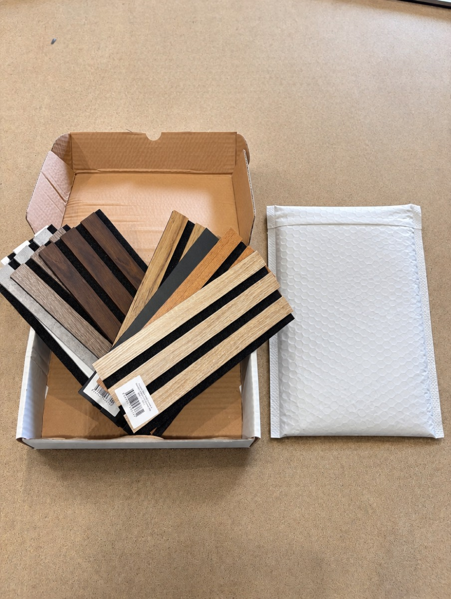
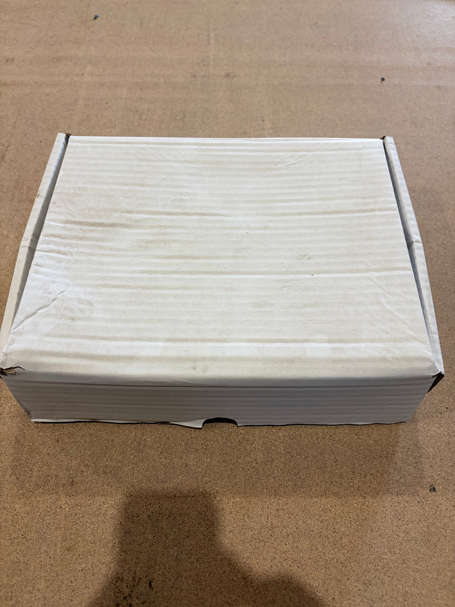
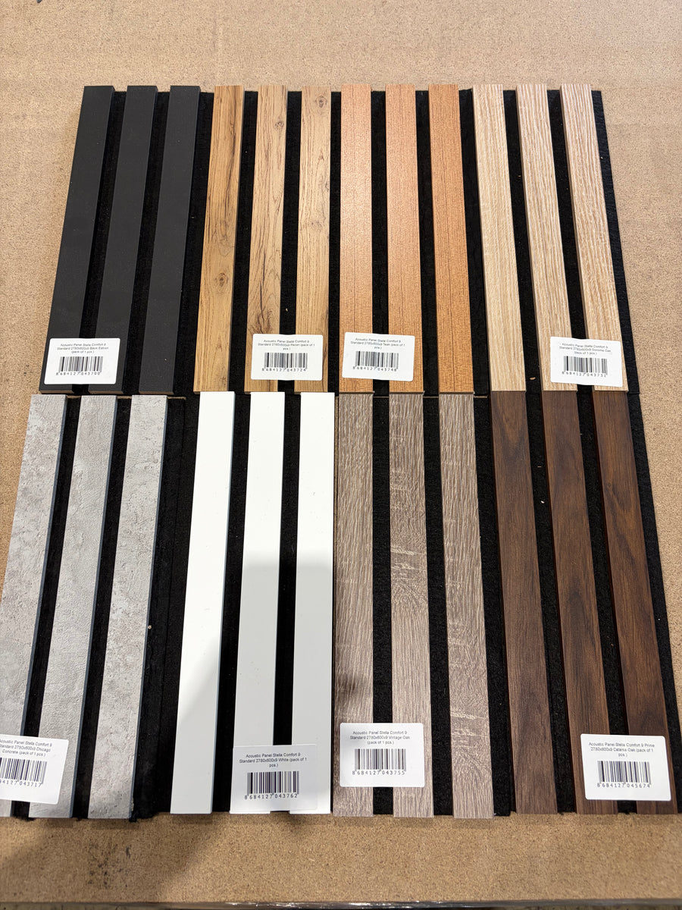

Színminta csomag
Válassz színeket, és otthon, a saját falad előtt nézheted meg őket.


Legnépszerűbb színeink
További színek
+ szállítás: 500 Ft
A mintát csomagpontra is kérheted.
Wide típusok: ugyanazok az árnyalatok, mint a hagyományos változatoknál, csak 57 mm lamella szélességgel.
Nézd meg felrakva!
Válassz egy színt, és megmutatjuk valódi otthonokban.
↑ Kattints egy színre
Wide típusok: ugyanazok az árnyalatok, csak 57 mm lamella szélességgel.